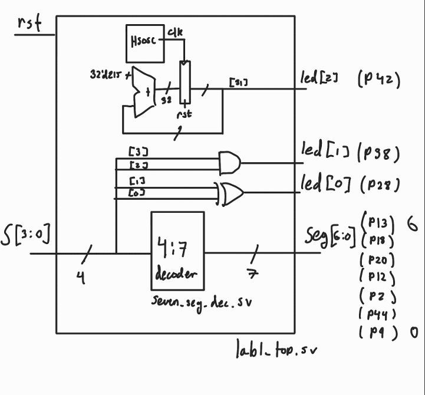

Lab 1: FPGA and MCU Setup and Testing
Introduction
This report outlines the design and verification of a simple FPGA design to become familiar with the E155 toolflow. The design contains a seven segment display decoder, a simple digital oscillator, and a few logic gates.
Design and Testing Methodology
The core part of the design is a 4 to 7 bit decoder for controlling a 7 segment display to display the hex value of a 4 bit input signal. This was created using behavioral SystemVerilog code and was verfified with a simple testbench, where the input signal was incremented from 0000 to 1111 and values for each bit of the decoded output was checked against the expected stream of bits. In hindsight, this was likely a convoluted approach to verification, but since the module is just a truth table, using standard test vectors would essentially mean copying the RTL code to see if it matched itself.
For the top level module, the seven segment decoder was instantiated alongside a high speed oscillator (HSOSC) to generate a 48 MHz clock. This clock was fed into a digital clock divider where a constant P is added to a 32 bit register on each rising edge of the fast clock, causing the most significant bit to toggle with a frequency given by the following equation:
\[ f = \frac{P \cdot F}{2^n} \]
Filling in n = 32 bits, F = 48 MHz, and f = 2.4 Hz, we can solve for P = 215 to achieve the desired frequency.
Technical Documentation
The SystemVerilog source code for this lab can by found on my github page
Block diagram

The block diagram in Figure 1 demonstrates the design structure, with the 7:4 decoder, two logic gates, high frequency clock, and clock divider
Schematic
The schematic in Figure 2 demonstrates the phsyical hardware layout of the design, with the seven LEDs of the seven segment display with current limiting resistors, the three on-board LEDs driven by the design, and the input DIP switches.
Component Values
From the data sheet the LED display has a voltage drop of roughly 2 volts. Since we are using a 3.3 Volt supply and the FPGA pins have an 8 mA current limit, we can set up the following equation for the minimum current limiting resistor value:
\[ R = \frac{3.3V - 2V}{8mA} = 165 \Omega \]
However, to be extra careful not to burn out my LED display, I used a factor of safety of 2 and used 330 Ohm resistors.
Results and Discussion
Testbench Simulation
The design was shown to meet all specifications in simulation, except the blinking LED which was tested in hardware.
Hardware testing
The seven segment display and two gate-driven LEDs responded to input DIP switches in accordance with the design spec
Figure 7 shows the corrent timing of the blinking LED in hardware.
Conclusion
I was able to set up the E155 toolchain and demonstrate it on this moderately simple lab. I look forward to building experience with this flow on future labs. I spent roughly 15 hours on this lab.
AI Prototype
I gave Microsoft Bing the following prompt to see if it could replicate some of my work:
“Write SystemVerilog HDL to leverage the internal high speed oscillator in the Lattice UP5K FPGA and blink an LED at 2 Hz. Take full advantage of SystemVerilog syntax, for example, using logic instead of wire and reg.”
Initally, it gave me the following code:
module led_blinker_2hz (
output logic led
);
// Internal oscillator output
logic clk;
logic clk_en;
// Instantiate the high-frequency oscillator (typically 48 MHz)
SB_HFOSC #(
.CLKHF_DIV("0b00") // No division: 48 MHz
) hf_osc_inst (
.CLKHFEN(clk_en),
.CLKHFPU(clk_en),
.CLKHF(clk)
);
// Enable the oscillator
initial clk_en = 1'b1;
// Counter to divide 48 MHz down to 2 Hz
// 48,000,000 / 2 = 24,000,000 clock cycles per toggle
localparam int COUNT_MAX = 24_000_000;
logic [$clog2(COUNT_MAX)-1:0] counter = 0;
always_ff @(posedge clk) begin
if (counter == COUNT_MAX - 1) begin
counter <= 0;
led <= ~led;
end else begin
counter <= counter + 1;
end
end
endmoduleThis did not synthesize since it used a different clock generator module, SB_HFOSC. When I asked it to correct the error, it insisted that it was related to a missing package. However, once I changed this module to HSOSC, it synthesized just fine.
This prototype made me question the landscape of digital design. It seems that these models have gotten very good at the big picture, and only now struggle with the software specific details.